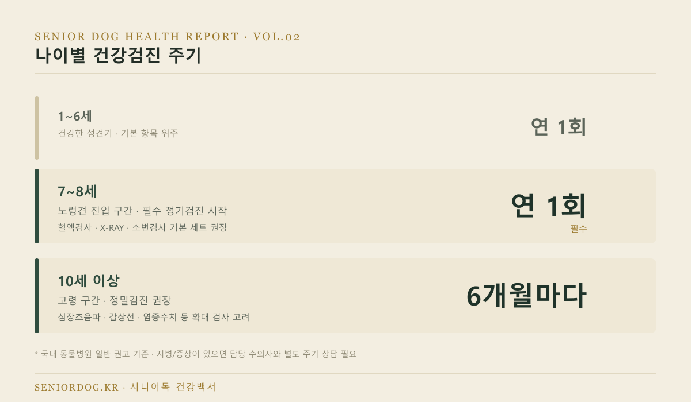
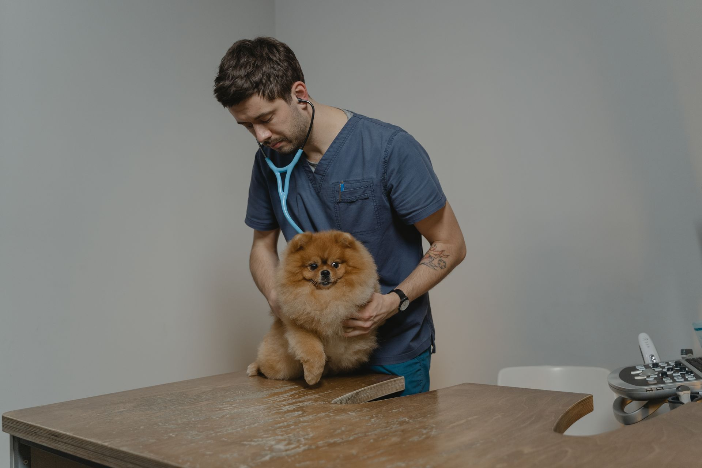
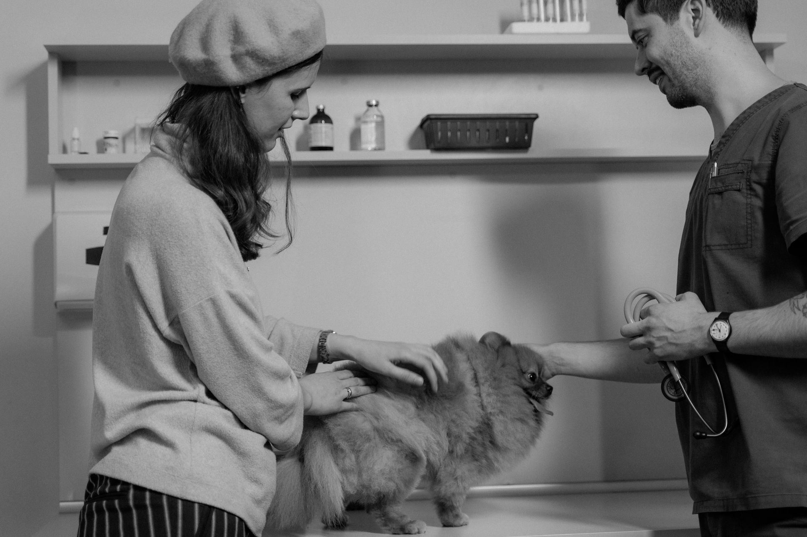
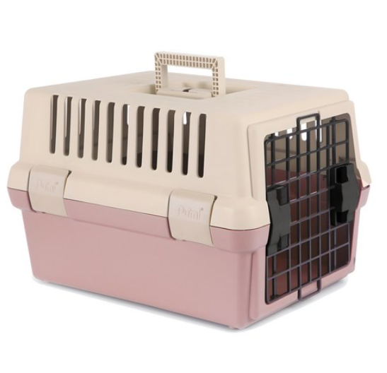
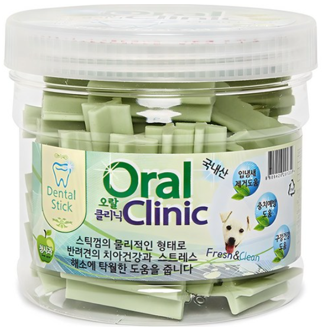

노령견 건강검진 주기와
필수 검사 항목 총정리
지난 글에서 소형견은 몇 살부터 노령견인지 기준을 정리해드렸는데요, 이번엔 그다음 단계 — 노령견이 되면 실제로 무엇을, 얼마나 자주 검진받아야 하는지를 정리해드릴게요. “그냥 1년에 한 번 병원 가면 되는 거 아니야?”라고 생각하실 수 있는데, 나이 구간별로 권장 주기와 항목이 조금씩 달라요.

· 7~8세부터는 연 1회, 10세 이상은 6개월에 1회 정기검진이 권장돼요.
· 기본검진은 신체검사·혈액검사(CBC)·X-RAY·소변검사 4가지가 기본 세트이고, 병원마다 10~20만원대가 일반적이에요.
· 심장초음파·갑상선 검사·염증수치처럼 더 정밀한 검사는 필수는 아니지만, 10세 이상이거나 증상이 있으면 추가하는 걸 고려해보세요.
- 나이별 건강검진 주기
- 기본검진 vs 확장검진, 뭐가 다를까?
- 각 검사는 왜 필요할까?
- 검진 비용 가이드 & 병원 고르는 팁
- 병원 방문 전에 챙기면 좋은 용품
- FAQ
나이별 건강검진 주기
| 나이 | 단계 | 권장 주기 |
|---|---|---|
| 1~6세 | 건강한 성견기 | 연 1회 (기본 항목 위주) |
| 7~8세 | 노령견 진입 구간 | 연 1회 (필수) |
| 10세 이상 | 고령 구간 | 6개월마다 (정밀검진 권장) |
7~8세부터는 매년 검진이 “선택”이 아니라 “필수”로 바뀌는 시점이라고 보시면 돼요. 10세를 넘기면 반년마다 챙기는 이유는, 이 시기부터 질병이 진행되는 속도가 빨라질 수 있어서 반년 사이에도 상태가 꽤 달라질 수 있기 때문이에요.
기본검진 vs 확장검진, 뭐가 다를까?
동물병원에서 “종합검진”이라고 부르는 상품을 보면 항목이 병원마다 제각각이라 헷갈리실 수 있어요. 크게 두 단계로 나눠서 생각하시면 편해요.
| 구분 | 포함 항목 | 추천 대상 |
|---|---|---|
| 기본검진 | 기본 신체검사(치과·심장청진·슬개골·검안·피부) + 혈액검사(CBC) + X-RAY(흉부·복부) + 소변검사 | 7세 이상 모든 소형견 |
| 확장검진 | 기본검진 + 혈청화학 검사 + 심장초음파 + 갑상선 패널 + 염증수치 + 요단백 정량평가 | 10세 이상, 또는 기본검진에서 이상 소견 있었던 경우 |
* 항목 구성은 병원마다 다를 수 있어요. 방문 전 어떤 항목이 포함되는지 미리 확인하시는 걸 추천드려요.

각 검사는 왜 필요할까?
기본 신체검사
수의사가 직접 촉진·청진하며 치아 상태, 심장 소리, 슬개골(무릎) 상태, 눈, 피부를 확인해요. 비용 부담이 적으면서도 겉으로 드러나는 이상 신호를 가장 먼저 잡아낼 수 있는 검사예요.
혈액검사(CBC)
빈혈, 염증, 면역 상태 등 신체 기능 전반을 확인해요. 소형견은 몸이 작아서 증상이 겉으로 드러나기 전에 수치로 먼저 이상이 나타나는 경우가 많아, 노령견에게는 특히 중요한 검사예요.
X-RAY (흉부·복부)
뼈, 관절, 심장 크기, 장기 상태를 영상으로 확인해요. 눈으로는 알 수 없는 심장 비대나 종양 의심 소견을 조기에 발견하는 데 도움이 돼요.
소변검사
요단백, 요당, 비뇨기계 감염 여부를 확인해요. 노령견에서 흔한 신장 기능 저하를 초기에 확인할 수 있는 검사예요.
심장초음파 (확장검진)
소형견은 특히 심장 판막 질환 발생률이 높은 편이라, 10세 이상이라면 심장초음파를 통해 심근 상태와 판막 기능을 더 정밀하게 확인해보시는 걸 추천드려요.
검진 비용 가이드 & 병원 고르는 팁
기본검진은 10~20만원대면 충분해요. 이 범위를 훌쩍 넘는 견적을 부르는 병원이라면, 특수 장비를 쓰는 게 아닌 이상 다른 병원부터 알아보시는 걸 추천드려요. 확장검진(심장초음파·갑상선 등)은 여기에 항목별로 비용이 얹어지는 구조라, “종합검진 얼마예요?”라고만 묻지 말고 정확히 어떤 항목이 포함되는지까지 짚어서 물어보세요.
병원 2~3곳만 비교해봐도 바로 티가 나요. 같은 “종합검진”이라는 이름을 걸어놓고도 실제 포함 항목은 반토막인 곳이 수두룩하거든요. 가격만 보지 말고 항목표를 받아서 직접 대조해보세요.

병원 가기 전 미리 준비하면 좋은 것
- 혈액검사가 포함된다면 공복 여부를 미리 확인 (병원마다 기준이 달라요)
- 최근 몇 주간 달라진 점(활동량, 식욕, 배변 등)을 메모해가면 진료가 훨씬 정확해져요
- 이전 검진 기록이 있다면 함께 지참 — 수치 변화 추이를 비교할 수 있어요
병원 방문 전에 챙기면 좋은 용품
소형견은 병원까지 안전하게 데려갈 이동장이 사실상 필수고, 기본 신체검사에 “치과 검진”이 포함되는 만큼 평소 치아 관리도 함께 챙기시면 좋아요.

푸르미 반려동물 전용 하드형 이동장
병원 이동 시 안정감을 주는 하드형 이동장이에요. 노령견은 낯선 환경에서 스트레스를 더 크게 받을 수 있어서, 튼튼하고 시야가 확보되는 제품이 도움이 돼요.
쿠팡에서 보기 ↗
강아지 오랄클리닉 덴탈 스틱 껌
기본 신체검사에 포함되는 치과 검진에서 치석·치아 문제가 가장 흔하게 발견돼요. 평소 덴탈 스틱으로 치석 관리를 해주시면 검진 결과에도 도움이 돼요.
쿠팡에서 보기 ↗자주 묻는 질문
Q. 매번 확장검진까지 다 받아야 하나요?
A. 아니에요. 7~8세라면 기본검진만으로도 충분한 경우가 많고, 10세 이상이거나 기본검진에서 이상 소견이 나왔을 때 확장검진을 추가하시면 돼요.
Q. 검진에서 아무 이상이 없으면 다음 검진까지 안심해도 되나요?
A. 네, 다만 권장 주기(7~8세 연 1회, 10세 이상 6개월마다)는 지켜주시는 게 좋아요. 노령견은 상태가 비교적 빠르게 변할 수 있어서, 주기를 늘리기보다는 꾸준히 지키시는 걸 추천드려요.
Q. 검진 항목이 병원마다 다른데, 뭘 기준으로 골라야 하나요?
A. 이 글의 기본검진 4항목(신체검사·혈액검사·X-RAY·소변검사)이 포함돼 있는지부터 확인하시고, 여기에 우리 아이 나이·증상에 맞는 확장 항목을 추가하시면 돼요.
다음 글
다음 글에서는 노령견에게 흔한 질병 5가지를 다룹니다.